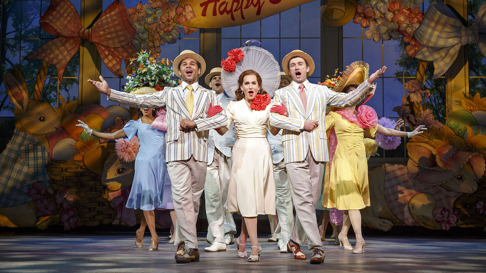
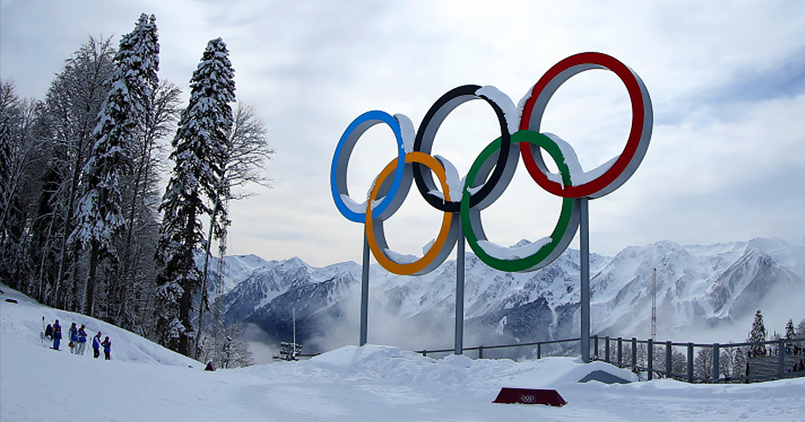

Home | Bands | Hobby | Favorite Vacation
I don't usually have much time to pursue hobbies, so the ones that I do engage in usually don't require much effort on my part. One of the easiest hobbies to get into is watching other people succeed. The following activities include watching some of the most successful people on the planet do what they do best.
As I don’t really follow sports and I’ve never really enjoyed playing any, I tried to find a hobby that I enjoy doing – except everything I thought of revolved around the same thing. I really enjoy spending large amounts of time browsing the internet looking up information about various things. Most recently, I became fixated on researching musicals and their actors.
Playbill includes all the information someone would need to research the newest Broadway (and off-Broadway) musicals, including ticket prices and tour dates. The Latest News feed shows information on actors, new openings, and pictures from recent shows. There is a gallery that is themed around shows and often includes pictures that show the first look of a play or a look back in time at another production. There is a store embedded in this site that allows users to purchase official Broadway merchandise. This website also includes a list of all current shows and a list of all shows that will be closing soon.

Broadway Musical Home is the ultimate collection of information on Broadway musicals, as just the home page includes information about shows that have won Best Musical, which shows have run the longest, what shows are now playing on Broadway, and which shows are headed to Broadway. This site has an extensive list of all awards musicals have one from the past year and all nominated musicals starting from 2000. One unique component of this website is the database of musical performance rights. There is also a page with a short about page dedicated to well-known composers, lyricist, librettists, and choreographers.

I don't follow sports often, but when I do it is undoubtedly because it is time for the Olympics. During the Olympic years, most nations send their best athletes to compete against other countries in a variety of sports, hoping to win medals for their events. Like most viewers, I instantaneously become a hardened advocate for my country's athletes.
NBC Olympics has all the information necessary to catch up on the most recent Olympic games. There are tabs that lead to the schedule for all events. You can view all the medals that have been won by all countries overall and for the current day. The home page features news articles based on the happenings of the Olympic athletes. By clicking on a specific country, you can see what medals have been won by which athlete, what events the country's athletes are competing in on the current day, and what events are live right now.
Olympic has backlogged information on most of the Olympic games from the past. You can choose what year you want to view and look at highlights from the events. The newsfeed contains information about how the host country is fairing during the aftermath of the economy. There is a gallery of interesting images and videos taken during the course of the games. There is a shop where you can buy official Olympic brand merchandise, both from the current games and from games of the past.